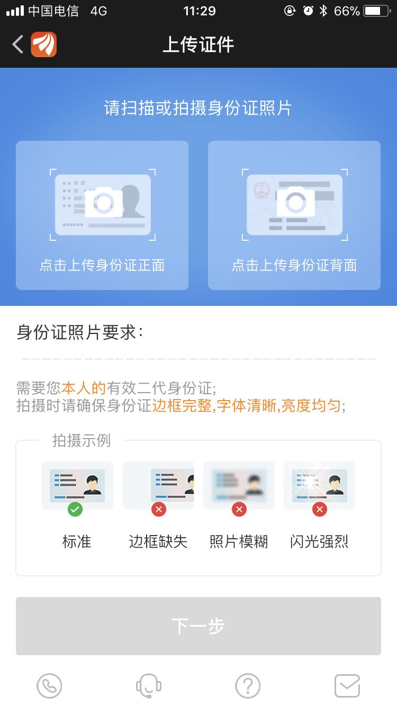

2018-01-21
表单设计是我们做产品设计时经常会做的一件事，特别是长表单，在设计时尤其要注意。
没有用户愿意对着一串很长且无聊的字段机械式的填写。
针对长表单设计，我结合自己的项目经验和使用其他APP时的一些好的体验，总结了下面10个小tips：
1、提前告知所需材料，避免表单填写过程的打断 ；
2、用户激励，提前告知用户完成表单的奖励；
3、清晰告知用户完成整个表单的步骤 ；
4、先易后难，将容易完成的表单放在前面 ；
5、自动填写；
6、提供合适的输入方式；
7、数据自动保存；
8、识别代替输入；
9、适时地鼓励与反馈；
10、及时的帮助。
正文
在用户正式开始填写表单前，提前告知用户完成表单所需的材料，比如身份证或工作证等，让用户可以提前准备好，避免途中因为准备材料 被打断。 也可以防止用户在途中因为某些原因暂时不能提供相应的材料而中途放弃，这种情况对用户体验是一个很大的伤害。
在用户开始任务前，提前告知用户完成任务后可以获得哪些好处，比如可以获得特权、实物奖励等，增加用户对完成表单的期待感可以有效 地提升用户完成任务的动力。

这个仅针对分步表单的设计。
在开始任务时，清晰地告知用户整个表单的填写有多少个步骤，每一步是什么，可以让用户形成一个清晰的预期，减少用户在填写表单过程中 的不耐情绪。 未知的东西更容易让用户焦虑。
或者可以用进度条告知用户表单完成的进度，如下图：
就像从小老师教导我们的一样，答题的时候一定要先易后难。进行流程设计的时候也可以遵循这个道理，将容易完成的表单放在前面，这 样做有三个好处：
和后台数据库进行匹配，自动填写已知信息。
比如用户在填写长表单前已经在平台填写了联系方式、名称或其他信息，而填写长表单时也需要这些信息要素，我们就可以将这些信息自动填 入表单，减少用户的输入。 还比如，后面的表单需要的信息要素正好在前面的表单中有输入，我们也可以自动帮用户填入。
用户填写表单的时候，能提供选项的尽量提供选项。
选择代替手动输入有两个好处：
常见的有性别、地区、年龄等。
举一个栗子，之前我们的产品需要用户的工作经验用于分类搜索，在用户填写信息时我们提供了统一的选项，这样我们就能得到标准化和规 范化的用户数据。
但是在提供选项的时候要注意所提供选项的合理性，在上面用户工作经验的栗子中，就要特别注意工作经验的区间划分。
如果表单不适合提供选项，必须由用户手动填写，则需要根据不同的场景提供正确的控件。
比如输入账号、密码，填写邮箱，输入昵称等，均需提供不同的键盘。
这点非常重要！！！ 特别是对于一些填写内容多的表单，一定要自动保存。
试想一下，你正在完成一个长表单的填写，前面已经填写了很多内容，可是到了提交前，或者因为系统崩溃，或者因为网络状况，或者因为其他 原因不能完成提交，而你又不得不退出。当你重新开始填写表单时，却不得不重新填写一遍所有的信息，这绝对是让人崩溃的。
举一个我近期经历过的正面的栗子。
最近我在办理入深户的手续，预约公安局办理准迁证需要完成一个很复杂的表单填写，第一步需要填写大量的信息要素，第二步需要上传很 多照片。当我完成了百分之九十的时候，我发现有一张照片我没有，需要家人拍给我，当时我又不得不退出整个预约流程。当时心里真的有 十万只草泥马在奔腾。
后来照片齐全了，我重新开始预约，惊喜地发现所有的信息都已经自动保存了，并不需要重新输入，我只需要将最后一张照片上传就OK了。真 是棒棒哒！没想到公安系统的网上服务体验也能做的这么棒。
善于利用技术的力量，技术上能解决的就不要让用户输入。
比如有时需要输入身份证号或银行卡号，现在有很多技术接口支持拍照扫描自动获取号码，不需要用户费劲的手动输入。 再比如输入 位置，通过系统自动定位，既准确又省事。
上图是在微信中添加银行卡时，可通过拍照自动识别卡号。
把用户当成普通人，而大部分普通人都是需要鼓励与肯定的。
适时地给予用户反馈，“你很棒，快完成了哦！”，“你已经完成了大半了，再加把劲就能完成全部了哦”。 一句有温度的 文案，在关键节点上能有效安抚用户的情绪。
不打扰用户，但是在用户需要的时候及时出现。
在设计表单时，对于一些专业词汇或者较难理解的概念，要给予明确的解释，避免用户填写表单时云里雾里、不知所措；对于一些有较高要求 的表单信息也要给予明确的示例供用户参考；而对于一些较复杂的流程，如果有必要的话，还可以提供在线咨询帮助，协助用户完成整个表单 的填写。

上图是东方财富的开户流程-上传身份证。是一个很好的示例，大家可以体会一下。